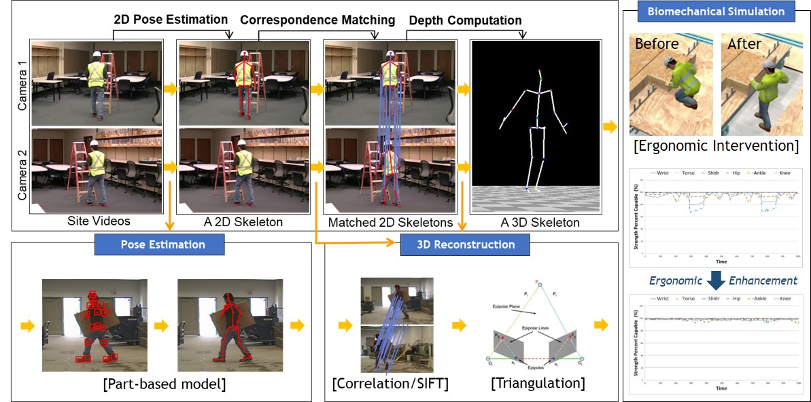
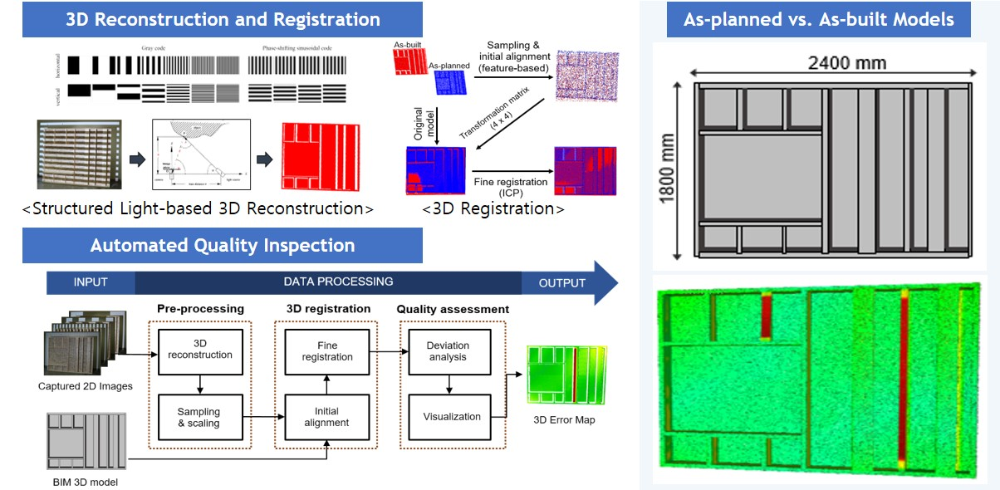
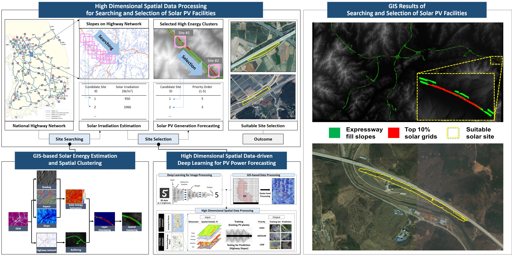

Research Areas
The CIC research group is dedicated to the scientific study of construction informatics and computing for computer-aided decision making through the integration of automated data acquisition, systemic analysis, and information visualization. The research endeavors within the CIC laboratory were first initiated with a primary emphasis on the domain of construction safety, with the goal of evaluating a vision-based motion sensing approach to monitor, analyze, and modify workers' safety behavior for the reduction of construction fatalities and injuries. The innovations that arise from this research will enable researchers and industry professionals to constantly monitor the unsafe behavior of construction workers, which to date has been very difficult to achieve. Thus, the work may help take the first step toward achieving the following goal, "Safety professionals have long dreamed of developing ways to measure safe behavior in the workplace rather than measuring the outcomes of unsafe behavior" (Construction Safety Management by Levitt and Samelson, 1987).
Expanding on this research theme, the current research interests are centered on gaining a comprehensive understanding of human behavior and social interactions within the construction context. Recent research topics encompass the following areas:
- Human motion sensing and ergonomic analysis for health and safety
- BIM-oriented mixed reality for operation analysis and visualization
- GIS-based spatial data processing for civil infrastructure analysis
- System dynamics and reliability for modeling and analysis of complex systems
- Automation and robotics for construction industrialization
Research Highlights





Ongoing Research
This motion study explores computer vision techniques as a potentially suitable method for data collection in construction. These techniques enable the extraction of 3D pose data from video streams and allow for on-site ergonomic analysis. By implementing these methods, workplaces and physical tasks that may cause excessive physical stress on body parts can be re-designed to create a working environment that accommodates the workers, rather than forcing workers to adapt to the environment.
This spatial augmented reality (SAR) research explores a computer-aided visual inspection approach using a projector-camera system for the automated detection and measurements of construction errors during off-site quality inspection. This approach involves using a projector to directly visualize construction as-planned models on the structure currently being built on a site, providing visual guidance to workers and allowing them to compare the as-built objects with the as-planned model.
This augmented reality (AR) study aims to improve construction and facility management by visualizing an as-planned model on its corresponding surface in the user's view through an AR device (e.g., Hololens) for fast, easy, and correct information retrieval. The markerless AR system does not rely on markers for the localization and registration of scanned environments, thus allowing the user to interactively experience a digital world without the cumbersome tasks of marker installation.
This study explores the applications of virtual reality (VR) for skills and safety training to understand the immersion-enhancing factors that affect users' experiences and design an interactive interface that can enhance training efficiency. VR simulation provides a realistic and controlled experimental environment where participants' experiences and their psychological responses to environments can be measured in real-time without interrupting the ongoing experience, hardly possible in a field condition.
This reinforcement learning (RL) study aims to automate and simulate construction equipment operations for virtual construction by learning operational strategies through trial-and-error experiments in virtual environments. The modeling of an intelligent agent integrates the physical characteristics of actual equipment, enabling the learned agent to emulate its behavior in a field setting. In this context, the RL approach may serve as a foundational research endeavor in the domain of autonomous construction equipment.
This study explores a deep learning network for the integration of various geospatial features into the modeling and learning of map-type data (e.g., meteorological and geographical maps). The spatial data processing is inspired by the idea that the data format of digital maps is similar to that of images (e.g., 2D matrix with colors vs. elevations), and thus deep learning techniques can be applied for an understanding and recognition of spatial patterns in a digital map for future predictions.
Contact
222 Wangsimni-ro, Seongdong-gu, Seoul, S. Korea 04763